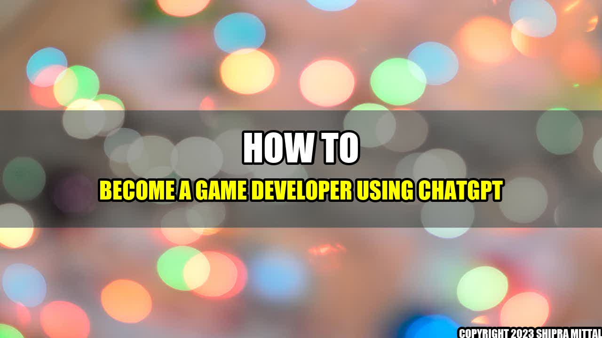

How to Become a Game Developer Using ChatGPT

Do you love playing games? Have you ever thought about creating your own games? If so, you're not alone. Many people dream of becoming a game developer, but few know where to start. Fortunately, there's a platform that can help you get started: ChatGPT.
John was always fascinated by games. He loved the way they could transport you to different worlds and let you experience things you never could in real life. He dreamed of creating his own games but didn't know where to start. Then one day, he stumbled upon ChatGPT. With the platform's help, John was able to learn the skills he needed to become a game developer and make his dream a reality.
Concrete Examples
ChatGPT offers a wide range of resources to help aspiring game developers. Here are just a few:
- Video tutorials: ChatGPT offers video tutorials that cover everything from basic coding concepts to advanced game development techniques.
- Online courses: If you prefer to learn at your own pace, you can take online courses on ChatGPT. These courses cover everything from game design to programming.
- Community forums: ChatGPT has a thriving community of game developers who are always willing to help out. You can ask questions, share your work, and get feedback from other developers.
How to Turn Your Passion for Gaming into a Career: A Step-by-Step Guide to Becoming a Game Developer Using ChatGPT
- Start by learning the basics of game development, such as programming languages and design principles.
- Take advantage of the resources on ChatGPT, such as video tutorials, online courses, and community forums.
- Practice, practice, practice. The more you create games, the better you'll get.
References and Further Readings
Reference:
- How to become a game developer using ChatGPT - Cointelegraph tag:google.com,2013:googlealerts/feed:4805891097632973494
Further Readings:
Social
Share on Twitter Share on LinkedIn